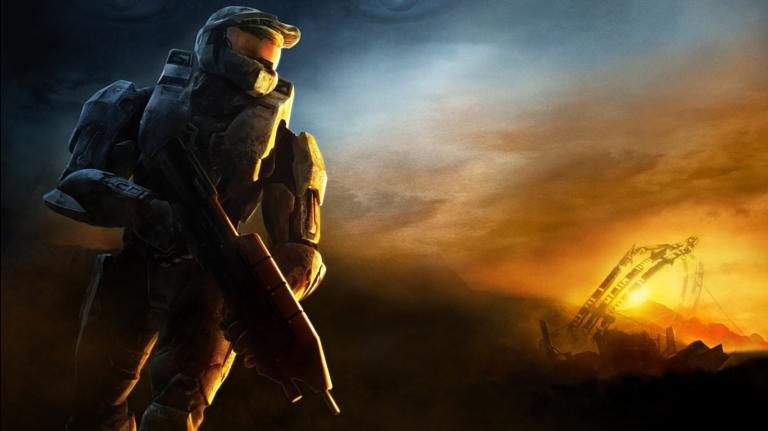

Halo has been around since its release with the first xbox back in 2001. It became popular with multiplayer because it had an element that most first-person-shooter games didn't have and that something is called fair start. Fair start is when all players start with the same amount of ammo, equipment, weapons. This was different because other fps (First-person-shooter) games had loadouts and these loadouts are different sets of equipment, weapons, etc. This was very different and made the game fair for all of the players